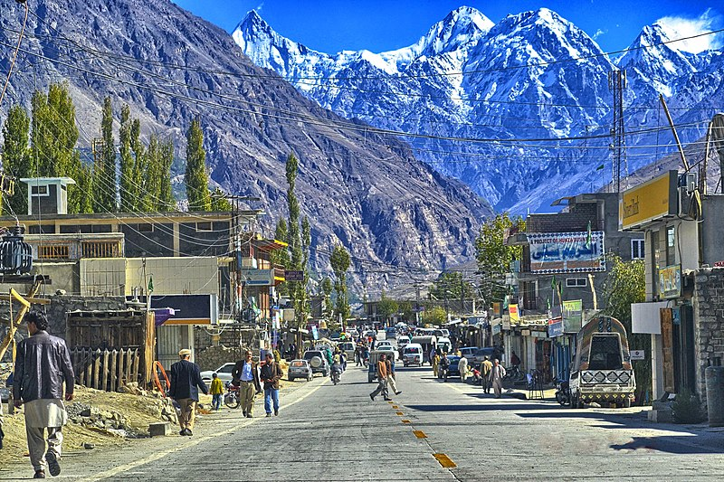
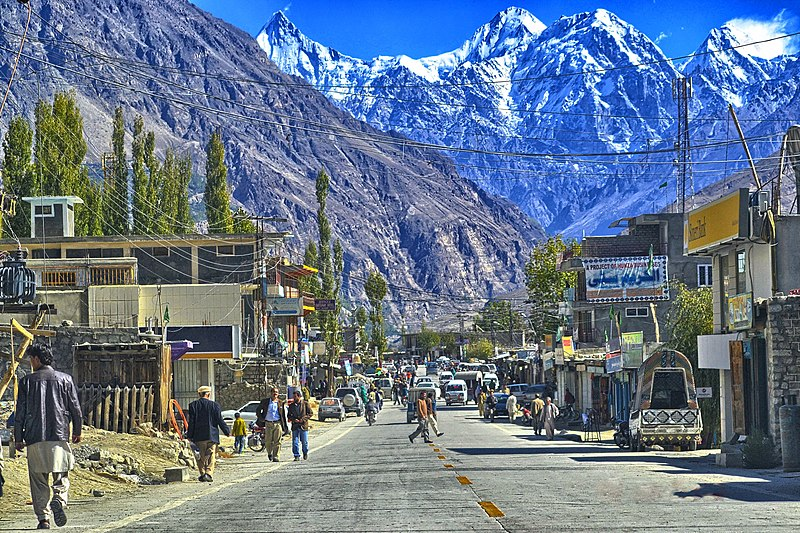

The Hunza Valley is a mountainous valley in the northern part of the Gilgit-Baltistan region of Pakistan, formed by the Hunza River, bordering Ishkoman to the northwest, Shigar to the southeast, Afghanistan's Wakhan Corridor to the north, and the Xinjiang region of China to the northeast.
The Hunza Valley floor is at an elevation of 2,438 meters (7,999 feet). Geographically, the Hunza Valley consists of three regions: Upper Hunza (Gojal), Central Hunza, and Lower Hunza (Shinaki).
 
